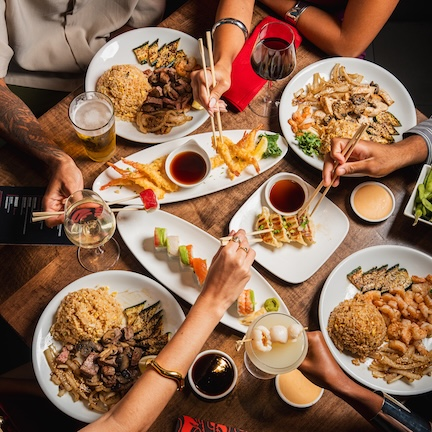
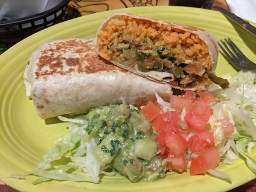

My family and I love to travel to new neighborhoods around the city to try new resturants. We have lived in the city for the past 20 years and have loved to try resturants both in our neighborhood and on the outside and completely opposite sides of the city!
The overall best resturant in San Francisco is... BULLET TRAIN SUSHI!!!!!! This is a really good japanese sushi resturant!!

Benihana is also an exellent Japansese cuisine retsurant but focuses less on sushi and more on other dishes!

Taqueria Los Mayos is an amazing mexican resturant that has delicious mexican cuisine!

| Appetizers | Salads | Mains |
|---|---|---|
| Fried rice | ||